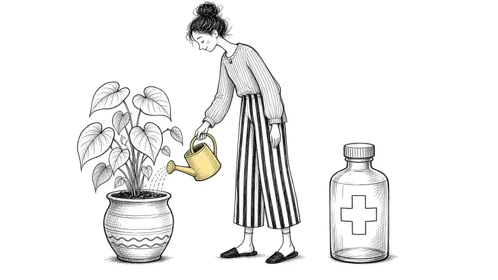

Why Grief Doesn't Need a Cure

When we are in pain, it is natural to look for a fix. A pill, a program, a set of steps that will make it stop. Many grieving people search for something like that in the early weeks and months, and some feel worse when nothing works.
This guide offers a different perspective. Grief is not an illness. It is not a malfunction to correct or a problem to solve. It is the natural response to losing someone you love, and the goal is not to cure it but to learn to carry it in a way that lets you keep living.
Why we treat grief like a problem
Modern life has trained many of us to approach discomfort as something to eliminate. If you are anxious, there is an app. If you are tired, there is coffee. If you are sad, there must be a way to get happy again quickly.
Grief does not fit that model. It is not a symptom of something wrong. It is a sign of something right: that you formed a deep bond with another person, and that bond still matters.
When grief is framed as a problem, people often start to feel like they are failing. They wonder why they have not recovered yet, why the sadness keeps returning, why the advice is not working. The answer is often that grief was never meant to be fixed in the first place.
Grief is not a wound that should close as fast as possible. It is love learning how to live without the person it was meant for.
What grief actually is
Grief is a whole-person response to loss. It involves your emotions, your body, your thoughts, your habits, and your sense of who you are. It is how your mind and heart gradually adjust to a world that no longer includes someone central to it.
That adjustment takes time. It also never fully finishes for many people, because the love does not finish. Our introduction, What Is Grief?, explores this more.
Why a cure mindset can make grief harder
It adds a sense of failure
If grief is a problem to fix, then still grieving means you are doing something wrong. That belief stacks guilt and frustration on top of an already heavy experience.
It encourages pushing feelings away
A cure mindset often leads people to suppress grief so they can look and feel "better." Suppressed feelings tend to return later, sometimes more intensely.
It can cut you off from the person
If healing means getting over them, then staying connected starts to feel like a symptom. Many people find comfort in continuing bonds, and a cure mindset can make that comfort feel forbidden.
It sets an impossible goal
No one can stop loving someone on command. If the goal is to stop feeling grief, it is a goal that may never be reached.
A different goal: carrying grief
Instead of curing grief, many people find it helpful to think about carrying it. Carrying means:
- Letting grief be part of your life without letting it be your whole life
- Making room for both pain and joy
- Finding ways to stay connected to the person who died
- Adjusting your routines, roles, and identity over time
- Building a life that holds the loss rather than erasing it
Many grieving people describe a shift over time. The grief does not get smaller so much as their life grows around it. The loss is still there, but there is more room for other things too.
What helps when you are not trying to cure it
If grief is not something to fix, what is there to do? Quite a lot.
1. Let it be present
When grief rises, notice it. Let it be there without rushing to get rid of it. This is not wallowing. It is allowing.
2. Stay connected
Tell their stories. Look at their photos. Keep a ritual that matters. These acts can ease grief rather than prolong it.
3. Care for your body
Rest, food, movement, and fresh air will not end grief, but they help you carry it.
4. Find people who can sit with you
The most helpful support often comes from people who do not try to fix you. A friend who listens, a support group, or a counselor who understands grief can make the weight feel shared.
5. Make meaning, slowly
Over time, some people find meaning in their loss: a new perspective, a cause they care about, a deeper appreciation for the people still here. This is not required, and it cannot be rushed. But it often grows naturally when grief is given space. See Grief and Meaning.
When grief does need more support
Saying grief is not an illness does not mean grief never needs help. Sometimes grief becomes stuck, intense, and disabling for a long time. Sometimes it sits alongside depression, anxiety, or trauma that deserves treatment of its own.
Consider reaching out to a professional if:
- You cannot manage daily life for an extended period
- The intensity of grief has not changed at all over many months
- You feel numb and disconnected from everyone
- You are relying on alcohol or drugs to get through
- You have thoughts of ending your life
In those cases, support is not about curing grief. It is about helping you carry it in a way that is safer and more livable. If you are thinking about suicide, please call or text 988 to reach the Suicide and Crisis Lifeline any time.
What about medication?
Some people wonder whether medication can help with grief. There is no pill that removes grief, and most grief does not require medication. However, if grief is accompanied by depression, severe anxiety, or sleep problems that are not easing, a doctor may suggest options. That is a decision to make together with a professional who knows your situation. Our overview of grief support options covers this in more detail.
Grief and love, together
One of the most freeing ideas for many grieving people is that grief and love are connected. The pain is not a separate problem stacked on top of the love. It is the love, in a different form.
That does not make the pain easy. But it can make it less frightening. If you are grieving deeply, it is because you loved deeply. That is not something that needs to be cured. It is something that deserves to be honored.
A gentle closing
You may still wish that someone could take the pain away. That wish makes sense. But you are not broken, and you are not failing. You are grieving, which is one of the most human things a person can do. Over time, with patience and support, most people find that grief changes, that life grows around it, and that the love they carry becomes a source of strength as well as sorrow.
This article is for general information and support. It is not medical or mental health advice. If grief has become unbearable or you are thinking about harming yourself, call or text 988 right now.
Related reading

Grief Alongside Depression and Anxiety
Grief often arrives alongside other mental health challenges. How to recognize overlap and get support for all of it.

Why Your Brain Keeps Replaying Their Last Days
Memories of the final days or moments can loop relentlessly. Here is why that happens and how to let the rest of their life back in.

Rumination in Grief: Getting Off the "What If" Wheel
Endless what-ifs and if-onlys can trap grieving people. Learn why rumination happens and gentle ways to step off the wheel.